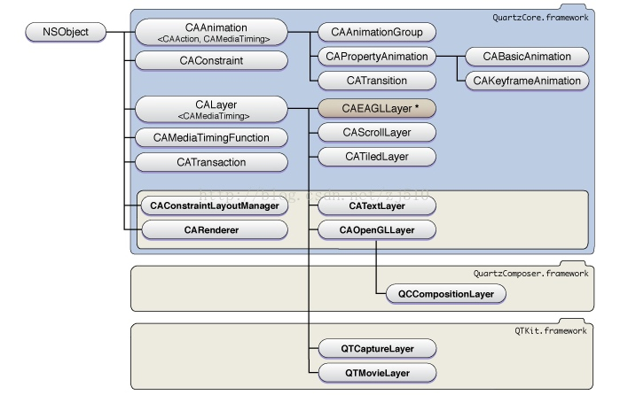

<!DOCTYPE html>
<!--[if IEMobile 7 ]><html class="no-js iem7"><![endif]-->
<!--[if lt IE 9]><html class="no-js lte-ie8"><![endif]-->
<!--[if (gt IE 8)|(gt IEMobile 7)|!(IEMobile)|!(IE)]><!--><html class="no-js"><!--<![endif]-->
<head>
  <meta charset="utf-8">
  <title>
    
  ACEfish-Blog
  

  </title>
  <meta name="author" content="">
  <meta name="description" content="学习记录">

  <meta name="HandheldFriendly" content="True">
  <meta name="MobileOptimized" content="320">
  <meta name="viewport" content="width=device-width, initial-scale=1">
  
  <link href="asset/css/screen.css" media="screen, projection" rel="stylesheet" type="text/css">
  <link href="atom.xml" rel="alternate" title="ACEfish-Blog" type="application/atom+xml">
  <script src="asset/js/modernizr-2.0.js"></script>
  <script src="asset/js/jquery.min.js"></script>
  <script src="asset/highlightjs/highlight.pack.js"></script>
  <link href="asset/highlightjs/styles/solarized_light.css" media="screen, projection" rel="stylesheet" type="text/css">
  <script>hljs.initHighlightingOnLoad();</script>

  <style type="text/css">
  .cat-children-p{ padding: 6px 0px;}
  .hljs{background: none;}
  </style>
  <script type="text/javascript">
  var isAddSildbar = true;
  </script>
  <script src="asset/js/octopress.js" type="text/javascript"></script>
</head>
<script type="text/javascript">
//链接新开窗口
function addBlankTargetForLinks () {
  $('a[href^="http"]').each(function(){
      $(this).attr('target', '_blank');
  });
}
$(document).ready(function(event) {
  addBlankTargetForLinks();
});
</script>
<body   >
  <header role="banner"><hgroup>
  <h1><a href="index.html">ACEfish-Blog</a></h1>
  
    <h2>学习记录</h2>
  
</hgroup>

</header>
  <nav role="navigation"><ul class="subscription" data-subscription="rss">
  <li><a href="atom.xml" rel="subscribe-rss" title="subscribe via RSS">RSS</a></li>
  
</ul>
  
<form action="http://google.com/search" method="get">
  <fieldset role="search">
    <input type="hidden" name="q" value="site:acefish.github.io" />
    <input class="search" type="text" name="q" results="0" placeholder="Search"/>
  </fieldset>
</form>
  
<ul class="main-navigation">

  <li id=""><a target="_self" href="index.html">首页</a></li>

  <li id=""><a target="_self" href="archives.html">归档</a></li>

</ul>

</nav>
  <div id="main">
    <div id="content"> 
<div class="blog-index">

	<article>
		 <header>
		  	<h1 class="entry-title"><a href="14879241904124.html">Method Swizzling</a></h1>
			<p class="meta"><time datetime="2017-02-24T16:16:30+08:00" 
			pubdate data-updated="true">02/24/2017</time></p>
		 </header>
	  	<div class="entry-content">
		  	
		  	<blockquote>
<p>本文是由发表在南峰子博客的翻译由Mattt Thompson发表于<code>nshipster</code>的Method Swizzling文章</p>
</blockquote>

<p><code>Method Swizzling</code>是改变一个selector的实际实现的技术。通过这一技术，我们可以在运行时通过修改类的分发表中<code>selector</code>对应的函数，来修改方法的实现。</p>

<p>本文讲一些Method Swiling中需要注意的问题:</p>


		</div>

		 
		 <footer>
      	<a rel="full-article" href="14879241904124.html#more">read more &rarr;</a>
    	</footer>
    	

	</article>
 
	<article>
		 <header>
		  	<h1 class="entry-title"><a href="14891313543932.html">coreData多线程</a></h1>
			<p class="meta"><time datetime="2017-03-10T15:35:54+08:00" 
			pubdate data-updated="true">03/10/2017</time></p>
		 </header>
	  	<div class="entry-content">
		  	
		  	<p>CoreData中的NSManagedObjectContext在多线程中不安全,如果想要多线程访问CoreData的话，最好的方法是一个线程一个NSManagedObjectContext,每个NSManagedObjectContext对象实例都可以使用同一个NSPersistentStoreCoordinator实例，这个实例可以很安全的顺序访问永久存储，这是因为NSManagedObjectContext会在便用NSPersistentStoreCoordinator前上锁。</p>

<p>ios5.0为NSManagedObjectContext提供了initWithConcurrentcyType方法，其中的一个NSPrivateQueueConcurrencyType，会自动的创建一个新线程来存放NSManagedObjectContext而且它还会自动创建NSPersistentStoreCoordinator,</p>

<p>三层 NSManagedObjectContext 嵌套</p>


		</div>

		

	</article>
 
	<article>
		 <header>
		  	<h1 class="entry-title"><a href="14892022094971.html">Core Animation</a></h1>
			<p class="meta"><time datetime="2017-03-11T11:16:49+08:00" 
			pubdate data-updated="true">03/11/2017</time></p>
		 </header>
	  	<div class="entry-content">
		  	
		  	<p>Core Animation是一个复合引擎，它的职责就是尽可能快地组合屏幕上不同的可<br/>
视内容，这个内容是被分解成独立的图层，存储在一个叫做图层树的体系之中。于<br/>
是这个树形成了UIKit以及在iOS应用程序当中你所能在屏幕上看见的一切的基础。</p>

<p></p>


		</div>

		

	</article>
 
	<article>
		 <header>
		  	<h1 class="entry-title"><a href="14964011409915.html">iOS 开发中的九种锁</a></h1>
			<p class="meta"><time datetime="2017-06-02T18:59:00+08:00" 
			pubdate data-updated="true">06/02/2017</time></p>
		 </header>
	  	<div class="entry-content">
		  	
		  	<p>我们在使用多线程的时候多个线程可能会访问同一块资源，这样就很容易引发数据错乱和数据安全等问题，这时候就需要我们保证每次只有一个线程访问这一块资源，锁 应运而生。</p>

<p>补充:<a href="http://www.cnblogs.com/huangjianwu/p/4575763.html">实现锁的多种方式和锁的高级用法</a><br/>
<a href="http://www.jianshu.com/p/938d68ed832c">iOS中保证线程安全的几种方式与性能对比</a></p>


		</div>

		 
		 <footer>
      	<a rel="full-article" href="14964011409915.html#more">read more &rarr;</a>
    	</footer>
    	

	</article>
 
	<article>
		 <header>
		  	<h1 class="entry-title"><a href="14974389141976.html">Swift 基本运算符</a></h1>
			<p class="meta"><time datetime="2017-06-14T19:15:14+08:00" 
			pubdate data-updated="true">06/14/2017</time></p>
		 </header>
	  	<div class="entry-content">
		  	
		  	<h2 id="toc_0">赋值运算符</h2>

<pre><code class="language-swift">//赋值符可以赋值元组
let (x, y) = (1, 2)
// 现在 x 等于 1，y 等于 2
</code></pre>

<p>注意点:<br/>
与OC不同，赋值符不返回值,防止把想要判断相等运算符（ == ）的地方写成赋值符导致的错误</p>

<h2 id="toc_1">算术运算符</h2>

<pre><code class="language-swift">1 + 2       // 等于 3
5 - 3       // 等于 2
2 * 3       // 等于 6
10.0 / 2.5  // 等于 4.0

//加法运算符也可用于 String 的拼接
&quot;hello, &quot; + &quot;world&quot; // 等于 &quot;hello, world&quot;
</code></pre>

<p>注意:<br/>
与<code>OC</code>不同,<code>Swift</code>默认情况下不允许在数值运算中出现溢出情况.(可以使用<code>Swift</code>提供的溢出运算符实现溢出运算)</p>

<h2 id="toc_2">求余运算</h2>

<p>求余运算(<code>%</code>)在其他语言也叫取模运算</p>

<h3 id="toc_3">一元负号/正号运算符</h3>

<p>一元负/正号符（ -/+ ）写在操作数之前，中间没有空格。<br/>
负号或者正号可以抵消</p>

<h2 id="toc_4">组合赋值运算符</h2>

<p>例如:<br/>
<code>a += 2</code> //这组合赋值运算符也是没有返回值的（和赋值运算符一样）</p>

<blockquote>
<p>在Swift3 中已经移除了 ++ 或 -- 的自增 自减运算符</p>

<p>组合赋值运算符也没有返回值的 因此<code>let b = a += 2</code>的写法是错误的</p>
</blockquote>

<h2 id="toc_5">比较运算符</h2>

<p>和OC中是相同的,返回一个表达式是否成立的布尔值</p>

<blockquote>
<p><code>Swift</code> 也提供恒等（<code>===</code>）和不恒等（<code>!==</code>）这两个比较符来判断两个对象是否引用同一个对象实例</p>
</blockquote>

<p>注意:</p>

<p><strong>元组的比较方法:</strong><br/>
当元组中的值可以比较时，你也可以使用这些运算符来比较它们的大小。例如，因为<code>Int</code>和<code>String</code>类型的值可以比较，所以类型为<code>(Int, String)</code>的元组也可以被比较。相反，<code>Bool</code> 不能被比较，也意味着存有布尔类型的元组不能被比较</p>

<p>比较元组大小会按照从左到右、逐值比较的方式，直到发现有两个值不等时停止。如果所有的值都相等，那么这一对元组我们就称它们是相等的</p>

<pre><code class="language-swift">//当比较到1小于2就判断为ture 不会再比较下去
(1, &quot;zebra&quot;) &lt; (2, &quot;apple&quot;) // true，因为 1 小于 2
(3, &quot;apple&quot;) &lt; (3, &quot;bird&quot;) // true，因为 3 等于 3，但是 apple 小于 bird
(4, &quot;dog&quot;) == (4, &quot;dog&quot;) // true，因为 4 等于 4，dog 等于 dog
</code></pre>

<blockquote>
<p>Swift 标准库只能比较七个以内元素的元组比较函数。如果你的元组元素超过七个时，你需要自己实现比较运算符。</p>
</blockquote>

<h2 id="toc_6">三元运算符</h2>

<h2 id="toc_7">空合运算符</h2>

<p>空合运算符<code>（a ?? b）</code>将对可选类型<code>a</code>进行空判断，如果<code>a</code>包含一个值就进行解封，否则就返回一个默认值<code>b</code>。<br/>
表达式<code>a</code>必须是<code>Optional</code>类型<br/>
默认值<code>b</code>的类型必须要和<code>a</code>存储值的类型保持一致。</p>

<p>空合运算符相当于</p>

<pre><code class="language-swift">a != nil ? a! : b
</code></pre>

<blockquote>
<p>注意:</p>

<p>空合运算符也采用了短路求值,即当a为非空时,那么就不会再去计算b的值</p>
</blockquote>

<h2 id="toc_8">区间运算符</h2>

<h3 id="toc_9">闭区间运算符</h3>

<p><code>a...b</code>定义一个包含从a到b(包括a和b)</p>

<pre><code class="language-swift">for index in 1...5 {
    print(&quot;\(index) * 5 = \(index * 5)&quot;)
}
// 1 * 5 = 5
// 2 * 5 = 10
// 3 * 5 = 15
// 4 * 5 = 20
// 5 * 5 = 25
</code></pre>

<h3 id="toc_10">半开区间运算符</h3>

<p><code>a..&lt;b</code>定义一个从<code>a</code>到<code>b</code>但不包括<code>b</code>的区间</p>

<h3 id="toc_11">单侧区间</h3>

<p>闭区间运算符 有另外一种表达形式，可以表示向一次无限延伸的区间。</p>

<p>例如: 包含了数组从索引2到结尾所有值的区间。</p>

<pre><code class="language-swift">Anna、Alex、Brian、Jack

for name in names[2...] {
    print(name)
}
// Brian
// Jack

for name in names[...2] {
    print(name)
}
// Anna
// Alex
// Brian
</code></pre>

<p>类似的，半开区间操作符也有单侧表达形式，附带它的最终值，最终值并不会落在区间内。</p>

<pre><code class="language-swift">for name in names[..&lt;2] {
    print(name)
}
// Anna
// Alex
</code></pre>

<blockquote>
<p>注意</p>

<p>不能遍历省略了初始值的单侧区间，因为这样遍历的开端并不明显。但是可以遍历一个省略了最终值的单侧区间，但是由于这种区间的无限延伸特定，请确保循环中存在结束的条件或分支</p>
</blockquote>

<h2 id="toc_12">逻辑运算符</h2>

<p>与<code>&amp;&amp;</code> 或<code>||</code> 非<code>!</code></p>

<blockquote>
<p>与或非运算也是使用短路计算的</p>
</blockquote>

<p>注意:<br/>
<code>Swift</code>逻辑操作符 <code>&amp;&amp;</code> 和 <code>||</code> 是左结合的，即从左向右读,优先计算左边,建议加上括号来增加代码可读性</p>


		</div>

		

	</article>
 
	<article>
		 <header>
		  	<h1 class="entry-title"><a href="15536896283260.html">网络层架构</a></h1>
			<p class="meta"><time datetime="2019-03-27T20:27:08+08:00" 
			pubdate data-updated="true">03/27/2019</time></p>
		 </header>
	  	<div class="entry-content">
		  	
		  	<p>文章看自<a href="https://casatwy.com/iosying-yong-jia-gou-tan-kai-pian.html">这里</a></p>

<h2 id="toc_0">网络层设计需要注意</h2>

<h3 id="toc_1">1. 以什么样的方式将数据交付给业务层</h3>

<p>Delegate block notification</p>

<p>尽量不要使用notification，这要会导致可能的跨层访问导致耦合性增加；notification的一对多关系，导致问题难以追踪</p>

<p>block比较难追踪、维护；block会延长对象的生命周期；</p>

<p>在离散场景下，因为每次回调时做的任务，在每次回调时都是一致的，因此不要用block，使用delegate最好<br/>
在集约型调用时，因为每次请求类型都不一样，回调做的业务也不一致，因此使用block较好</p>

<p>在网络请求和网络层接受请求地方，采用block没问题，但是在获得数据交给业务方时，最好还是通过delegate去通知业务方,因为使用block的话 会导致调用请求的逻辑和获得结果的处理逻辑在同一个地方，代码变长，同时包含调用前和调用后的两部分逻辑，一次使用delegate，请求API地方只写请求的逻辑，在回调地方 只写回调的逻辑</p>

<h3 id="toc_2">2.交付什么样的数给业务层</h3>

<p>不要交付直接转换好的对象模型给业务层，可以交付json或者NSDictionary或者array，然后业务层通过特定的工具类转换为自己需要的数据(这个工具类可能是遵循了同一个协议的很多类，每个类有自己的转换方法，以及转换结果)</p>

<p>如果直接下发模型给业务层，那么在API请求层可能会有很多转换性能消耗，而且需要引入很多模型类，导致维护灾难</p>

<p>使用统一的工具类转换: 1. 可以使转换的逻辑集中，2. 将数据网络请求的数据直接转换为我们View需要展示的方便的数据，一步到位 3. 可以将业务数据和业务隔离，如果业务逻辑有修改，直接修改或者替换这个工具类即可，而UI有修改时，也不影响该转换工具类</p>

<p>转化出来的数据是直接可用的数据，不限定于dictionary或者model，也可以是view或者tableCell等</p>

<h3 id="toc_3">3.调用API应该是集约型还是离散型</h3>

<p>集约型: 所有api调用的是同一个类<br/>
离散型: 每一个请求api对应初始化一个请求类的对象</p>

<p>推荐离散型原因:</p>

<ol>
<li>可以方便做到正在进行的请求的取消</li>
<li>离散型可以针对不同的请求做不同的处理方式</li>
<li>当请求的着陆点消失时，离散型可以直接在请求类中感知并取消请求<br/>
如果是离散型的API调用，取消请求的代码写到APIManager里面就可以了，然后随着ViewController的回收进程，APIManager也会被跟着回收，这部分代码就得到了调用的机会。</li>
<li>离散型的请求可以给业务方提供更灵活性</li>
</ol>

<p>综上，关于集约型的API调用和离散型的API调用，我倾向于这样：对外提供一个BaseAPIManager来给业务方做派生，在BaseManager里面采用集约化的手段组装请求，放飞请求，然而业务方调用API的时候，则是以离散的API调用方式来调用。如果你的App只提供了集约化的方式，而没有离散方式的通道，那么我建议你再封装一层，便于业务方使用离散的API调用方式来放飞请求。</p>

<p>关于集约型的API调用和离散型的API调用，我倾向于这样：对外提供一个BaseAPIManager来给业务方做派生，在BaseManager里面采用集约化的手段组装请求，放飞请求，然而业务方调用API的时候，则是以离散的API调用方式来调用。</p>

<p>当我们不得已要实现继承时，最好使用协议方式来规范子类的重载方法，使用IOP方式来限制派生类的重载</p>

<p>总结</p>

<ol>
<li>使用delegate来做数据对接，仅在必要时采用Notification来做跨层访问</li>
<li>提供reformer机制来处理网络层反馈的数据，这个机制很重要，好处极多</li>
<li>网络层上部分使用离散型设计，下部分使用集约型设计</li>
<li>设计合理的继承机制，让派生出来的APIManager受到限制，避免混乱</li>
</ol>

<h2 id="toc_4">网络层的安全</h2>

<h2 id="toc_5">网络层优化方案</h2>

<p>优化入手切点:</p>

<ol>
<li>针对链路建立环节的优化</li>
<li>针对链路传输数据量的优化</li>
<li>针对链路复用的优化</li>
</ol>

<h3 id="toc_6">针对链路建立环节的优化</h3>

<p>请求建立的步骤：</p>

<ol>
<li>发起请求</li>
<li>DNS解析得到域名</li>
<li>根据IP进行3次或者4次(HTTPS)握手</li>
</ol>

<p>优化方案1.1： 缓存一些时效性比较长数据，减少请求发起的次数，将把API名字和参数拼成一个字符串然后取MD5作为key，存储对应数据； 清除数据策略:超时清理或者缓存数据过大清理，可以根据APP的操作日志决定；缓存可以存储在内存中，或者磁盘上<br/>
优化方案1.2： 减少请求发起的次数；1）比如多次下拉刷新，在一次请求没落地前剩下的没必要继续请求发送了 2）而类似条件筛选的，就可以取消前面的发送的请求 3）对于某些请求，没必要频繁发送的，可以先在本地记录，等数据满多少条后，上传数据；app每次启动时，上传上次的一流数据</p>

<p>优化方案2.1: 因为移动端的信号源常变，因此DNS链路的缓存经常变化，导致缓存的作用一般，另外因为很多应用app网络请求操作，属于你的app的DNS缓存很快被其他应用使用、覆盖，因此在解析DNS时，会耗费时间，优化方案就是：直接使用ip请求</p>

<p>对于建立链接时候的第三步，国内的网络环境分北网通南电信（当然实际情况更复杂，这里随便说说），不同服务商之间的连接，延时是很大的，我们需要想办法让用户在最适合他的IP上给他提供服务，那么就针对我们绕过DNS服务的手段有一个额外要求：尽可能不要让用户使用对他来说很慢的IP。</p>

<p>所以综上所述，方案就应该是这样：本地有一份IP列表，这些IP是所有提供API的服务器的IP，每次应用启动的时候，针对这个列表里的所有IP取ping延时时间，然后取延时时间最小的那个IP作为今后发起请求的IP地址。</p>

<pre><code class="language-objectivec">针对建立连接的优化手段其实是跟DNS域名解析的优化手段是一样的。不过这需要你的服务器提供
服务的网络情况要多，一般现在的服务器都是双网卡，电信和网通。由于中国特色的互联网ISP分
布，南北网络之间存在瓶颈，而我们App针对链接的优化手段主要就是着手于如何减轻这个瓶颈对
App产生的影响，所以需要维护一个IP列表，这样就能就近连接了，就起到了优化的效果。

我们一般都是在应用启动的时候获得本地列表中所有IP的ping值，然后通过NSURLProtocol的
手段将URL中的HOST修改为我们找到的最快的IP。另外，这个本地IP列表也会需要通过一个API
来维护，一般是每天第一次启动的时候读一次API，然后更新到本地。

</code></pre>

<h3 id="toc_7">针对链接复用的优化</h3>

<h2 id="toc_8">自己的一些思考</h2>

<ol>
<li><p>转化网络层下发数据的一些思考:<br/>
业务层通过特定的工具类转换为自己需要的数据(这个工具类可能是遵循了同一个协议的很多类，每个类有自己的转换方法，以及转换结果)</p></li>
<li><p>使用离散型请求，关于多模块共享数据</p>
<p>我们可以使用离散型请求，在业务层获取到数据后，如果该数据需要共享，则可以业务层告诉一个共享模块(单例模块)，将此数据存储（此共享模块数据Model层，提供数据的存。取、删、该等功能）</p></li>
<li></li>
</ol>


		</div>

		

	</article>
 
	<article>
		 <header>
		  	<h1 class="entry-title"><a href="15538277002309.html">基础知识</a></h1>
			<p class="meta"><time datetime="2019-03-29T10:48:20+08:00" 
			pubdate data-updated="true">03/29/2019</time></p>
		 </header>
	  	<div class="entry-content">
		  	
		  	<h2 id="toc_0">编译过程</h2>

<p>从源代码文件到可执行文件</p>

<p>以C语言程序为例子:<br/>
</p>

<p>程序经历了预处理、编译、汇编、链接<br/>
编译后为汇编文件、汇编之后的文件即为<code>.o</code>文件（二进制文件）,经过链接后即变为可执行文件（二进制文件）</p>

<p>编译将高级语言翻译为汇编语言<br/>
汇编即将语言翻译为机器语言指令，并打包为可重定位目标程序，即.o文件</p>

<h2 id="toc_1">LLVM和Clang的历史</h2>

<h3 id="toc_2">GCC</h3>

<p>是GUN开发的编程语言编译器，是自由类的Unix和苹果电脑Mac OS X操作系统标准编译器，原本用来处理C语言，后来扩展为可以处理C++、Fortran、Pascal、Objective-C、Java, 以及 Ada与其他语言</p>

<h3 id="toc_3">LLVM</h3>

<p>LLVM 是 Low Level Virtual Machine 的简称，这个库提供了与编译器相关的支持，能够进行程序语言的编译期优化、链接优化、在线编译优化、代码生成。简而言之，就是可以作为多种语言编译器的<strong>后台</strong>使用</p>

<p>Clang是C++编写的、基于LLVM的C/C++/Objective C/Objective C++ 编译器，其目标就是超越GCC</p>

<p>LLVM历史:<br/>
Apple早期是用GCC作为官方编译器，但是苹果给Object-C新增了很多特性，但是GCC开发者并不愿意给Apple实现，因此Apple就找到了毕业的Chris Lattner，其在学校就突出了一整套的完整的在编译时、链接时、运行时、甚至是在闲置时优化程序的编译思想，即为LLVM，其用GCC作为前端来对于用户程序进行语意分析产生IF（Intermidiate Format中间格式）然后用LLVM分析完成代码的优化和生成</p>

<p>Clang历史:<br/>
Apple吸收了Chris Lattner后，觉得GCC庞大而且笨重，然而自己OC语言在gcc中的优先级很低，再加上一些许可证方面的要求。Apple决定写一个只支C、C++、Object-C语言的前端Clang，来完全替代GCC</p>


		</div>

		

	</article>
 
	<article>
		 <header>
		  	<h1 class="entry-title"><a href="15547054235829.html">拾遗</a></h1>
			<p class="meta"><time datetime="2019-04-08T14:37:03+08:00" 
			pubdate data-updated="true">04/08/2019</time></p>
		 </header>
	  	<div class="entry-content">
		  	
		  	<h3 id="toc_0">1.</h3>

<p>对于RunLoop。系统定义了其他mode，并且可以在其他mode中执行runLoop，以限制处理哪些源，定时器和观察器。 由于runLoop只是指定为字符串，因此您还可以定义自己的自定义模式以限制事件的处理</p>

<h3 id="toc_1">2.Run loop并无并发</h3>

<p>Run loop并不像 GCD 或者操作队列那样是一种并发机制，因为它并不能并行执行任务。不过在<code>主 dispatch/operation</code>队列中， <code>run loop</code> 将直接配合任务的执行，它提供了一种异步执行代码的机制。</p>


		</div>

		 
		 <footer>
      	<a rel="full-article" href="15547054235829.html#more">read more &rarr;</a>
    	</footer>
    	

	</article>
  
	<div class="pagination">
	 <a class="prev" href="all_31.html">&larr; Older</a> 
<a href="archives.html">Blog Archives</a>
	 <a class="next" href="all_29.html">Newer &rarr;</a>  
	    
	</div>
</div>
 <aside class="sidebar"> 

	<section>
	  <h1>Categories</h1>
	  <ul id="recent_posts">
	  
	      <li class="post">
	        <a href="%E5%A4%9A%E7%BA%BF%E7%A8%8B.html"><strong>多线程&nbsp;(8)</strong></a>
	        
	        
	        
	      </li>
	  
	      <li class="post">
	        <a href="%E7%BA%BF%E7%A8%8B%E5%AE%89%E5%85%A8&&%E9%94%81.html"><strong>线程安全&&锁&nbsp;(3)</strong></a>
	        
	        
	        
	      </li>
	  
	      <li class="post">
	        <a href="RunLoop.html"><strong>RunLoop&nbsp;(5)</strong></a>
	        
	        
	        
	      </li>
	  
	      <li class="post">
	        <a href="KVC&&KVO.html"><strong>KVC&&KVO&nbsp;(2)</strong></a>
	        
	        
	        
	      </li>
	  
	      <li class="post">
	        <a href="runtime%E5%AD%A6%E4%B9%A0.html"><strong>runtime学习&nbsp;(9)</strong></a>
	        
	        
	        
	      </li>
	  
	      <li class="post">
	        <a href="OC%E9%AB%98%E7%BA%A7%E7%BC%96%E7%A8%8B-%E5%86%85%E5%AD%98%E7%AE%A1%E7%90%86.html"><strong>OC高级编程-内存管理&nbsp;(6)</strong></a>
	        
	        
	        
	      </li>
	  
	      <li class="post">
	        <a href="block%E5%AD%A6%E4%B9%A0.html"><strong>block学习&nbsp;(5)</strong></a>
	        
	        
	        
	      </li>
	  
	      <li class="post">
	        <a href="%E5%AE%98%E6%96%B9%E6%96%87%E6%A1%A3-%E5%86%85%E5%AD%98%E7%AE%A1%E7%90%86.html"><strong>官方文档-内存管理&nbsp;(6)</strong></a>
	        
	        
	        
	      </li>
	  
	      <li class="post">
	        <a href="%E7%BD%91%E7%BB%9C.html"><strong>网络&nbsp;(3)</strong></a>
	        
	        
	        
	      </li>
	  
	      <li class="post">
	        <a href="GPU&&%E6%B8%B2%E6%9F%93.html"><strong>GPU&&渲染&nbsp;(3)</strong></a>
	        
	        
	        
	      </li>
	  
	      <li class="post">
	        <a href="%E8%AE%BE%E8%AE%A1%E6%A8%A1%E5%BC%8F%E6%9E%B6%E6%9E%84%E8%B0%88(%E6%91%98%E5%BD%95).html"><strong>设计模式架构谈(摘录)&nbsp;(5)</strong></a>
	        
	        
	        
	      </li>
	  
	      <li class="post">
	        <a href="%E7%BB%84%E4%BB%B6%E5%8C%96%E5%BC%80%E5%8F%91%E5%AD%A6%E4%B9%A0.html"><strong>组件化开发学习&nbsp;(3)</strong></a>
	        
	        
	        
	      </li>
	  
	      <li class="post">
	        <a href="iOS%E7%BC%96%E8%AF%91%E6%B5%81%E7%A8%8B.html"><strong>iOS编译流程&nbsp;(13)</strong></a>
	        
	        
	        
	      </li>
	  
	      <li class="post">
	        <a href="dyld(%E7%A8%8B%E5%BA%8F%E5%90%AF%E5%8A%A8).html"><strong>dyld(程序启动)&nbsp;(4)</strong></a>
	        
	        
	        
	      </li>
	  
	      <li class="post">
	        <a href="Mach-O%E6%96%87%E4%BB%B6%E4%BA%86%E8%A7%A3.html"><strong>Mach-O文件了解&nbsp;(2)</strong></a>
	        
	        
	        
	      </li>
	  
	      <li class="post">
	        <a href="iOS-CoreAnimation.html"><strong>iOS-CoreAnimation&nbsp;(16)</strong></a>
	        
	        
	        
	      </li>
	  
	      <li class="post">
	        <a href="CoreGraphic.html"><strong>CoreGraphic&nbsp;(3)</strong></a>
	        
	        
	        
	      </li>
	  
	      <li class="post">
	        <a href="ARKit.html"><strong>ARKit&nbsp;(7)</strong></a>
	        
	        
	        
	      </li>
	  
	      <li class="post">
	        <a href="AFNetworking.html"><strong>AFNetworking&nbsp;(5)</strong></a>
	        
	        
	        
	      </li>
	  
	      <li class="post">
	        <a href="AsyncDisplayKit.html"><strong>AsyncDisplayKit&nbsp;(16)</strong></a>
	        
	        
	        
	      </li>
	  
	      <li class="post">
	        <a href="ReactnativeCocoa.html"><strong>ReactnativeCocoa&nbsp;(13)</strong></a>
	        
	        
	        
	      </li>
	  
	      <li class="post">
	        <a href="PromiseKit.html"><strong>PromiseKit&nbsp;(1)</strong></a>
	        
	        
	        
	      </li>
	  
	      <li class="post">
	        <a href="%E9%A1%B9%E7%9B%AE%E7%9B%91%E6%8E%A7.html"><strong>项目监控&nbsp;(8)</strong></a>
	        
	        
	        
	      </li>
	  
	      <li class="post">
	        <a href="APP%E4%BD%93%E7%A7%AF%E4%BC%98%E5%8C%96.html"><strong>APP体积优化&nbsp;(1)</strong></a>
	        
	        
	        
	      </li>
	  
	      <li class="post">
	        <a href="%E5%90%AF%E5%8A%A8%E4%BC%98%E5%8C%96.html"><strong>启动优化&nbsp;(1)</strong></a>
	        
	        
	        
	      </li>
	  
	      <li class="post">
	        <a href="Instrument%E5%AD%A6%E4%B9%A0.html"><strong>Instrument学习&nbsp;(1)</strong></a>
	        
	        
	        
	      </li>
	  
	      <li class="post">
	        <a href="LLDB.html"><strong>LLDB&nbsp;(1)</strong></a>
	        
	        
	        
	      </li>
	  
	      <li class="post">
	        <a href="%E8%87%AA%E5%8A%A8%E5%8C%96%E6%B5%8B%E8%AF%95.html"><strong>自动化测试&nbsp;(4)</strong></a>
	        
	        
	        
	      </li>
	  
	      <li class="post">
	        <a href="git.html"><strong>git&nbsp;(1)</strong></a>
	        
	        
	        
	      </li>
	  
	      <li class="post">
	        <a href="Cocoapods.html"><strong>Cocoapods&nbsp;(4)</strong></a>
	        
	        
	        
	      </li>
	  
	      <li class="post">
	        <a href="%E6%8B%BE%E9%81%97.html"><strong>拾遗&nbsp;(36)</strong></a>
	         <p class="cat-children-p"> 
	        
	        	<a href="%E9%9D%A2%E8%AF%95.html">面试&nbsp;(12)</a>&nbsp;&nbsp;
	        
	        	<a href="iOS%E5%BC%80%E5%8F%91%E7%9F%A5%E8%AF%86%E7%82%B9%E6%8B%BE%E9%81%97.html">iOS开发知识点拾遗&nbsp;(6)</a>&nbsp;&nbsp;
	        
	        	<a href="%E7%9F%A5%E8%AF%86%E7%82%B9%E6%8B%BE%E9%81%97.html">知识点拾遗&nbsp;(13)</a>&nbsp;&nbsp;
	        
	        	<a href="iOS%20%E5%B0%8F%E7%9F%A5%E8%AF%86.html">iOS 小知识&nbsp;(8)</a>&nbsp;&nbsp;
	        
	         </p> 
	      </li>
	  
	      <li class="post">
	        <a href="Swift-BaseLearning.html"><strong>Swift基础知识&nbsp;(28)</strong></a>
	        
	        
	        
	      </li>
	  
	      <li class="post">
	        <a href="Computer-programming.html"><strong>计算机编程&nbsp;(2)</strong></a>
	        
	        
	        
	      </li>
	  
	      <li class="post">
	        <a href="JavaScript%E5%AD%A6%E4%B9%A0%E7%AC%94%E8%AE%B0.html"><strong>JavaScript学习笔记&nbsp;(41)</strong></a>
	         <p class="cat-children-p"> 
	        
	        	<a href="%E5%9F%BA%E7%A1%80.html">基础&nbsp;(11)</a>&nbsp;&nbsp;
	        
	        	<a href="%E7%9F%A5%E8%AF%86%E6%99%AE%E5%8F%8A.html">知识普及&nbsp;(1)</a>&nbsp;&nbsp;
	        
	        	<a href="Flex.html">Flex&nbsp;(2)</a>&nbsp;&nbsp;
	        
	        	<a href="ES6.html">ES6&nbsp;(17)</a>&nbsp;&nbsp;
	        
	        	<a href="React.html">React&nbsp;(10)</a>&nbsp;&nbsp;
	        
	         </p> 
	      </li>
	  
	      <li class="post">
	        <a href="React-Native.html"><strong>React-Native&nbsp;(6)</strong></a>
	        
	        
	        
	      </li>
	  
	      <li class="post">
	        <a href="Python.html"><strong>Python&nbsp;(14)</strong></a>
	        
	        
	        
	      </li>
	  
	      <li class="post">
	        <a href="%E7%AE%97%E6%B3%95%E8%AF%BB%E4%B9%A6%E7%AC%94%E8%AE%B0.html"><strong>算法读书笔记&nbsp;(2)</strong></a>
	        
	        
	        
	      </li>
	   
	  </ul>
	</section>
	<section>
	  <h1>Recent Posts</h1>
	  <ul id="recent_posts">
	  
	      
		      <li class="post">
		        <a href="15718858302183.html">官方文档</a>
		      </li>
	     
	  
	      
		      <li class="post">
		        <a href="15710288132412.html">Collections and asynchronous updates</a>
		      </li>
	     
	  
	      
		      <li class="post">
		        <a href="15710248960458.html">Layout Specs</a>
		      </li>
	     
	  
	      
		      <li class="post">
		        <a href="15707800044047.html">Node Lifecycle</a>
		      </li>
	     
	  
	      
		      <li class="post">
		        <a href="15707737201639.html">线程</a>
		      </li>
	     
	  
	      
	  
	      
	  
	      
	  
	      
	  
	      
	  
	      
	  
	      
	  
	      
	  
	      
	  
	      
	  
	      
	  
	      
	  
	      
	  
	      
	  
	      
	   
	  </ul>
	</section>
	
</aside> </div></div>
  <footer role="contentinfo"><p>
  Copyright &copy; 2014 -  -
  <span class="credit">Powered by <a target="_blank" href="http://www.mweb.im">MWeb</a> &nbsp;&nbsp; Theme by <a href="http://octopress.org">Octopress</a></span>
</p>

</footer>

  
    


</body>
</html>